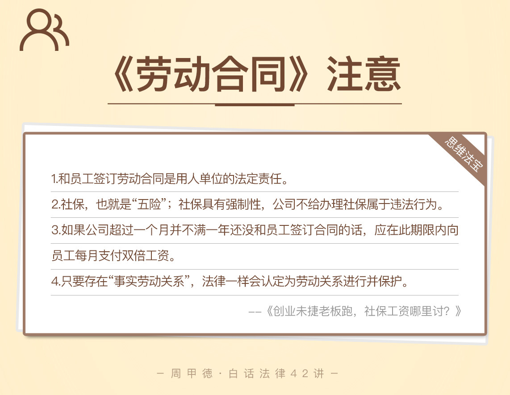

- 00 开篇词 这年头，你真应该懂点法律常识.md
- 01 “老周，我想知道” 常见法律认知盲区（一）.md
- 02 “老周，我想知道” 律师就在你身边（二）.md
- 03 “老周，我想知道” 律师就在你身边（三）.md
- 04 “老周，我想知道” 律师就在你身边（四）.md
- 05 创业未捷老板跑，社保工资哪里讨？.md
- 06 保密还是“卖身”，霸王条款怎么看？.md
- 07 编造流言蹭热度？看守所里降温度！.md
- 08 合同在手欠款难收，报警有用吗？.md
- 09 致创业：谁动了我的股权？.md
- 10 又见猝死！工“殇”究竟是不是工伤？.md
- 11 期权的“前世今生”.md
- 12 裁员面前，你能做的还有什么？.md
- 13 抄袭、盗图为什么做不得？.md
- 14 加班、工资、休假，你知道多少？.md
- 15 受贿原来这么“容易”.md
- 16 今天你用“VPN”了吗？.md
- 17 漏洞在眼前，可以悄悄破解吗？.md
- 18 “爬虫”真的合法吗？.md
- 19 非法集资到底是个啥？.md
- 20 黄色网站？不仅仅是“黄色”罪名.md
- 21 谁修改了我的积分资产？.md
- 22 外挂真能大吉大利吗？.md
- 23 如何看待“从删库到跑路”？.md
- 24 “伪基站”是你的避风港吗？.md
- 25 “网络诈骗”真的离你很远吗？.md
- 26 智斗中介：“北上广”租房图鉴.md
- 27 买买买！买房的“避坑”指南.md
- 28 闪婚又闪离，彩礼怎么理？.md
- 29 离婚还想和平？你要这么做.md
- 30 遗产继承的爱恨情仇.md
- 31 骗术升级？假结婚、假离婚的那些事儿.md
- 32 孩子学校受伤，谁之过？.md
- 33 如何让欠债还钱真正“天经地义”？.md
- 34 从透支到盗刷：人人须知的银行卡纠纷.md
- 35 远离“套路贷”的套路大全.md
- 36 危险！酒驾为什么被罚那么重？.md
- 37 老人倒地，“扶”“不服”？.md
- 38 “能动手就别吵吵”，代价你真的知道吗？.md
- 39 发生交通事故，如何处理？.md
- 40 交通事故综合法宝.md
- 41 婚姻家庭综合法宝.md
- 42 买卖房屋综合法宝.md
- 一键直达 法律专栏“食用”指南.md
- 加餐 “新冠肺炎”影响下，17个常见法律问题解答.md
- 结束语 法律，不会终止的篇章.md
05 创业未捷老板跑，社保工资哪里讨？
平常总听身边创业的朋友们吐槽说，创业后才发现，不去努力，压根不知道什么叫做绝望。话说这创业公司确实不容易，老板起早贪黑，员工亦是没日没夜地干活。但这中间，一旦哪个环节出现问题，就有可能导致整个公司都崩盘。
这不，程序员小王最近就找到了我，他所在的公司就出了大问题。
小王去了一家P2P创业公司工作，职位是高级软件工程师。可是才过了两个月，公司就干不下去了，最过分的是，老板现在都没影了。小王的工资一分也没到手，社保也断了两个月没交，离职证明更是没人能给开，就连找下份工作都受到了影响。
关键是，当初被老板的创业情怀打动，小王还没签下劳动合同呢，这下子出了事儿，能找谁去啊？公司这一关门，不知道要等到猴年马月才能解决，而小王只想讨回自己应得的那点薪水，所以特别想知道，他能不能拿走公司配的电脑和给公司开发的软件，卖了拿钱抵工资呢？
确实，创业不易，遇到问题扛不过去也能理解。可是不管做老板的有多少苦衷，对于员工来说，完全就是受害者了。如今的小王悔恨不已，觉得自己是被情怀忽悠了，更不知道要怎么做。
怎么办呢？要解决小王的问题，我们需要先来了解几个相关的法律知识。当然，无需害怕会有晦涩难懂的法律术语，我会带你了解最简洁清晰的定义。
法律知识
涉及职场的法律知识，劳动合同是重中之重。劳动合同是指员工和所在公司签订的确定劳动关系的合同，主要为了约定双方的权利和义务，因而对双方都具有约束力。劳动合同可以说是一个人在职场的“本命法宝”，从根本上保护着我们方方面面的权益。
劳动合同的内容一般包括：
试用期、工作期限、工作时间；
工作岗位、工资待遇情况；
有些还有保密条款和竞业限制；
对于技术人员，现在的劳动合同还可能会涉及期权、股权激励等内容。
关于保密问题和期权股权问题，我们以后会说到，现在可以不做多关注。
但是，必须强调的是，和员工签订劳动合同是用人单位的法定责任。所以，任何找借口不签劳动合同的行为，不仅仅是耍“流氓”，更是违法的。当然，一旦由于种种原因确实没签成，只要员工有证据能证明确实工作过，也就是存在“事实劳动关系”，法律一样会认定为劳动关系进行并保护。只不过毕竟没有白纸黑字的证明，工资待遇等问题就比较被动了。
而有的公司为了逃避法律责任，和员工签订的是劳务合同，试图变成平等主体间的法律关系。不过，实际上，我国法律对于劳动合同的认定，取决于双方真实的关系。如果双方构成了劳动关系，即使把名字写成劳务合同甚至随便叫什么合同，也是没用的，一样会被认定为劳动关系，员工自然同样受到《劳动合同法》的保护。
这里我简单和你解释下，劳动合同和劳务合同的区别。劳动合同属于《劳动合同法》，规定双方在职责上有从属关系，属于人事关系，公司自然需要承担更多的责任；劳务合同属于《合同法》的范围，规定双方各自承担独立的责任，也就是刚刚提到的平等主体关系。
另一个最为关注的，便是社会保险（区分于商业保险），简称社保，也就是通常所说的“五险一金”中的“五险”。“五险”包括养老保险、工伤保险、医疗保险、失业保险和生育保险，相关费用由公司和个人共同来出。其中公司需要交所有五项的费用，而个人只交养老、医疗和失业这三种种需要自已承担的部分”，所以有时候也叫做“三险一金”。
要注意，社保具有强制性，公司不给你办理社保属于违法行为。另外，经常提到的“一金”则指住房公积金，通常作为公司的福利也会给交。
事实上，“五险一金”方面如果个人交得越多，公司也就需要交更多的钱。明年元旦（即2019年1月1日）起，“五险”等各项社会保险将会由税务部门统一进行征收。现在很多人的社保都是按照最低工资的标准来交，将来由税务部门统一来收后，社保费用就会增加，这对个人或者公司来说都是不小的一笔钱。
情景分析
了解了劳动合同和社保的相关内容，我接着来说小王的问题。你可能已经猜到，小王现在最好的办法，就是去找当地的劳动争议仲裁委员会，申请仲裁来维权。具体有哪些权益呢？主要还是上述提到的工资、社保和公司违法导致的赔偿、补偿等问题。下面，我们分别来看下。
1.工资事项
因为没有签订劳动合同，小王需要提供证据来证明自己和公司存在劳动关系，比如说打卡记录、聊天记录、工牌及其他证明自己工作过的材料。另外，由于公司人去楼空，可能会出现无人应诉的情况。所以对于具体的请求，小王还提供相应的证据，比如他要讨回的两个月的工资的数额，就需要证据证明公司当初的承诺。
2.社保问题
目前全国大部分地方不能通过劳动争议或诉讼的手段解决社保问题。小王需要向劳动保障监察机构（如人力资源和社会保障局）投诉，或是寻找社会保险经办机构依法处理。
如果维权遇到障碍，我建议先要尽快找个新工作或是专门的存档单位，自己出钱补交上，以免出现断档。毕竟就社保而言，两个月的费用损失是小事，断档可算得上是大事。
比如说医保断档后再补交的问题，有的城市在补交的下个月就能重新享受医保，有的城市则需要补交6个月后才能恢复使用，然而谁又能保证自己这段时间不生病呢？再比如在北京上海这些城市，如果是外地户籍要买车买房，对于连续交社保的年限是有要求的。我们自然不能因小失大。
3.经济赔偿
前面有说到，公司必须与员工签订劳动合同。法律上规定，从用工之日（包括试用期）开始算起，如果公司超过一个月并不满一年还没和员工签订合同的话，应在此期限内向员工每月支付双倍工资。也就是说，公司应从小王工作的第二个月起，每月支付小王双倍工资作为赔偿。
4.经济补偿
小王的公司没能按时按量发工资，属于拖欠情况，小王还可以主张经济补偿。补偿的费用视工作时间而定：工作每满一年，便补偿一个月的工资。六个月以上不满一年的，则按一年计算；不满六个月的，则当成半年来看，也就是补偿半个月的工资。
作为劳动者，在劳动合同方面需要注意的主要就是这些了。至于小王的最后一个问题，能否对公司财产自行处理，显然是不可以的。
事实上，小王在申请仲裁之前，可以先申请保全公司财产，采用法律手段控制住公司财产，以保证日后利益不受损。无论何种情况下，直接将公司财产占为己有，进行变卖，都是违法行为。
要用法律武器来维权，就别把刀尖同时指向自己，不然孰是孰非难以明辨。生活中，可不是有不少的受害者，因为缺乏法律常识，本想维权却违了法，最后损害的都是自己的利益啊！
思维“法”宝
职场遇到这种“惨案”，无疑打击我们工作的乐趣。本想开开心心地工作赚钱就好，哪里会想到那么多的弯弯绕绕。所以，作为一名技术人员，在选择公司时，我们更是要慎之又慎。最后，我来总结一下。
首先你要看公司是否签订劳动合同，以及是否会把劳动合同给你一份，如果这两样没有做到，那就要保持警惕了。这样的公司可能有点问题，最好还是远离。
至于合同里的具体事项，就要根据个人的实际要求，基本内容是否符合以及附加约定是否合理等来综合判断了。
如果公司不签劳动合同，或签了合同不给你，而你又已经选择了这个公司，那平时就要注意收集证据了，以防有朝一日可能会用到。当然了，我们都希望这些证据永远都没有发挥作用的那一刻。

- 职场的一面是规则，一面是人心。想必职场上的你，对于工作相关的这些权益一定最为关心，也最有共鸣。那么，对于今天关于劳动合同与社保的分享，你还有哪些不明白的地方吗？或者你有遇到过类似的甚至更奇葩的情况吗，又是如何处理的呢？欢迎给我留言，我们一起交流解惑。同样欢迎你把今天get的“法宝”分享给身边人，一起避开职场上的“坑”，做最得利的知法人。
© 2019 - 2023 Liangliang Lee. Powered by gin and hexo-theme-book.